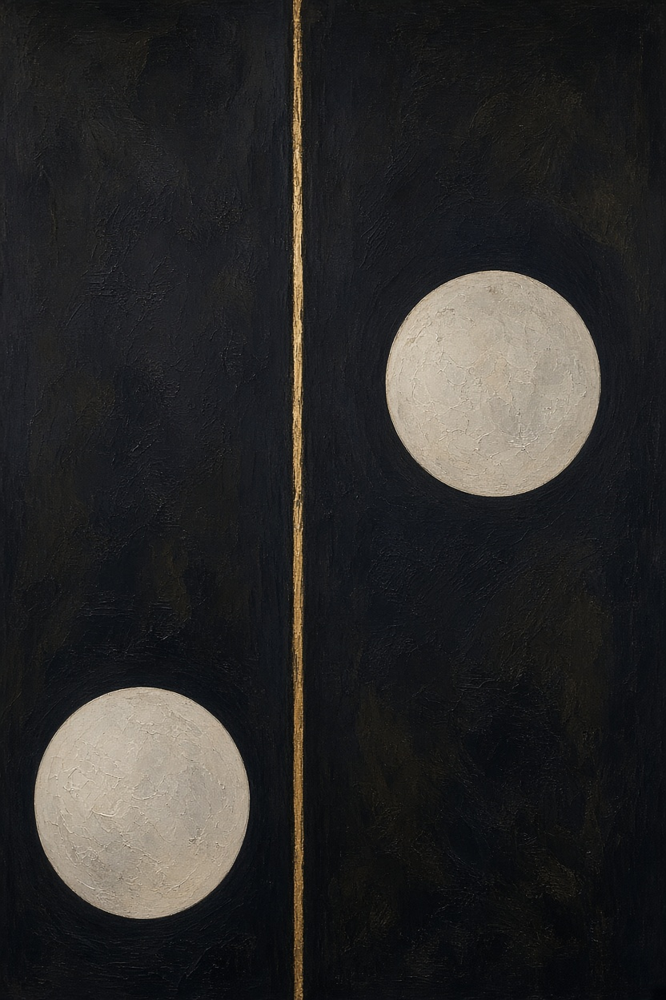

25 / 27 · THE EITHER SIDE
Left of the gold line, the disc sits low. Right of it, the disc has traveled. The screen works the same way. Left goes back. Right goes forward. If the counter lies, the page blushes red and stops being polite.

Left of the gold line, the disc sits low. Right of it, the disc has traveled. The screen works the same way. Left goes back. Right goes forward. If the counter lies, the page blushes red and stops being polite.